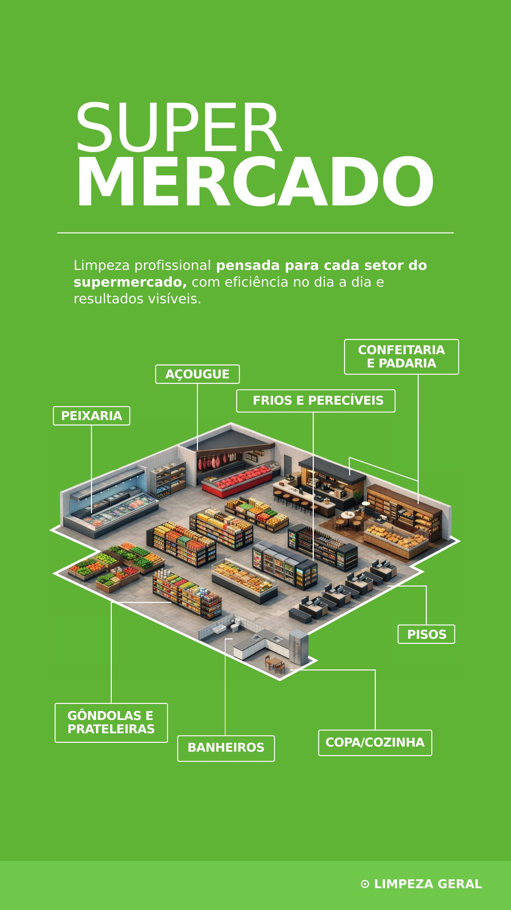
Supermercados
Uma solução segmentada para setores com rotinas e riscos de sujidade diferentes dentro do supermercado.
Informação organizada para facilitar a escolha.
O material cobre peixaria, açougue, confeitaria e padaria, frios e perecíveis, gôndolas, prateleiras, pisos, copa/cozinha, banheiros e áreas comuns.
Mapa geral do supermercado
A operação é dividida por setor para que a escolha dos produtos acompanhe o tipo de superfície, equipamento e resíduo encontrado no dia a dia.
Baseado no PDF técnico fornecido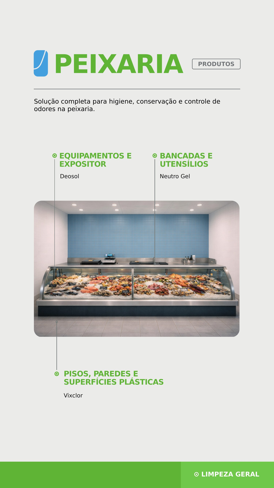
Peixaria
A peixaria demanda higiene, conservação e controle de odores em equipamentos, expositores, pisos, paredes, superfícies plásticas, bancadas e utensílios.
Baseado no PDF técnico fornecido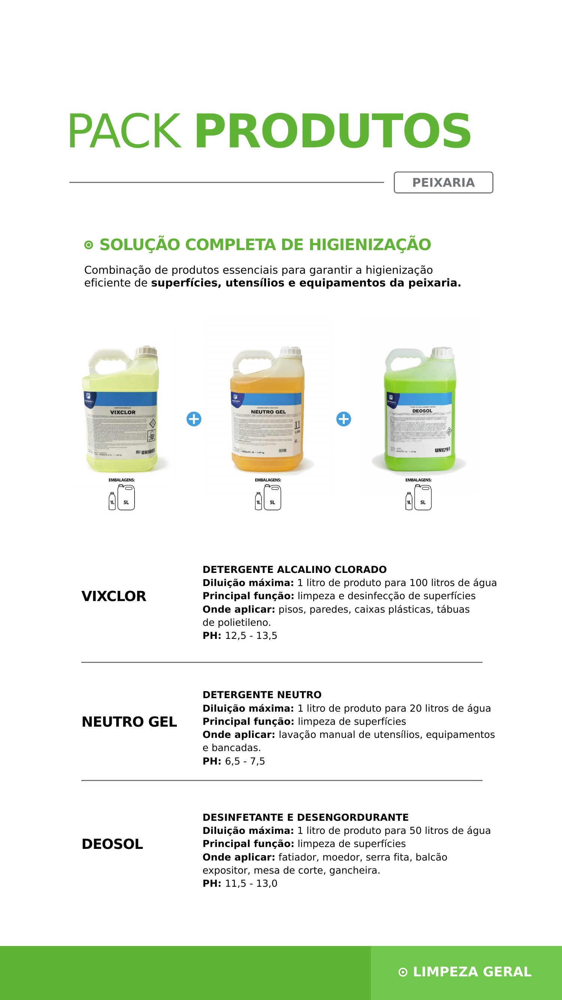
Pack peixaria
Vixclor aparece para pisos, paredes e superfícies plásticas; Deosol para equipamentos e superfícies; Neutro Gel para lavagem manual de utensílios e bancadas.
Baseado no PDF técnico fornecido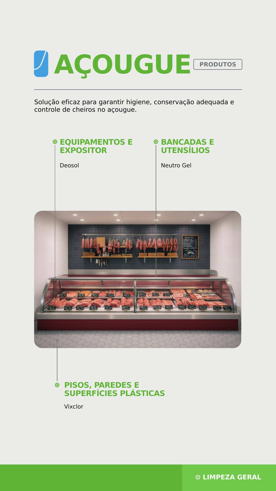
Açougue
O açougue utiliza a mesma lógica de separação entre equipamentos/expositores, pisos e superfícies plásticas e utensílios/bancadas.
Baseado no PDF técnico fornecido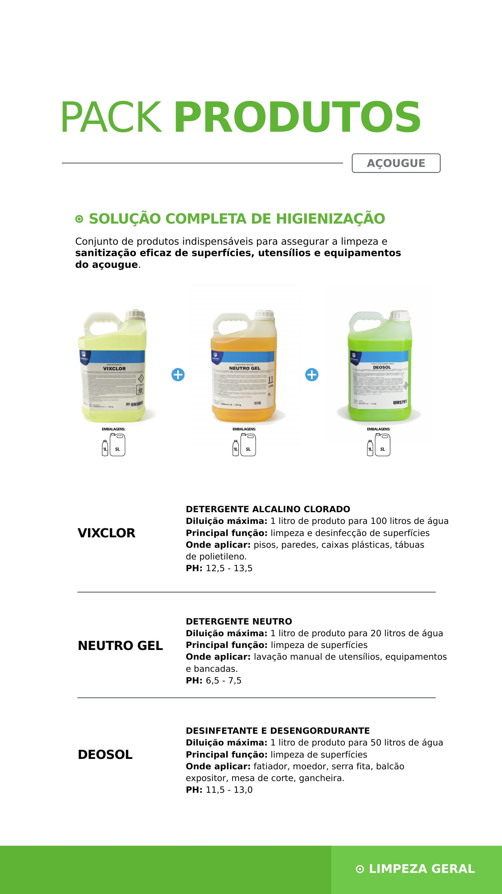
Pack açougue
Vixclor, Deosol e Neutro Gel formam a combinação apresentada para limpeza, sanitização e controle das principais áreas de manipulação.
Baseado no PDF técnico fornecido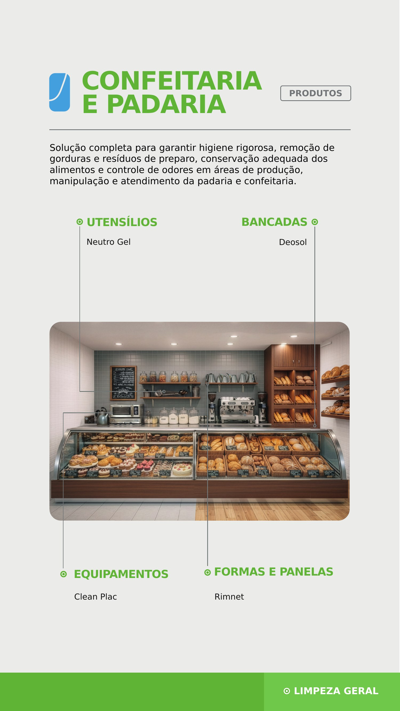
Confeitaria e padaria
A necessidade central é remover gorduras e resíduos de preparo, mantendo higiene em utensílios, equipamentos, bancadas, formas e panelas.
Baseado no PDF técnico fornecido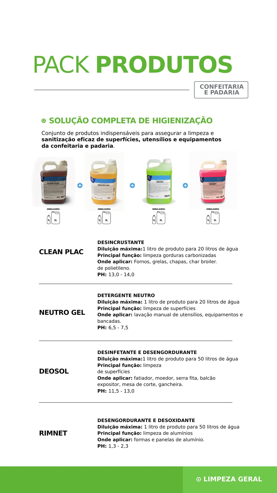
Pack confeitaria e padaria
Clean Plac é indicado para gorduras carbonizadas; Deosol para superfícies; Rimnet para formas e panelas de alumínio; Neutro Gel para utensílios e bancadas.
Baseado no PDF técnico fornecido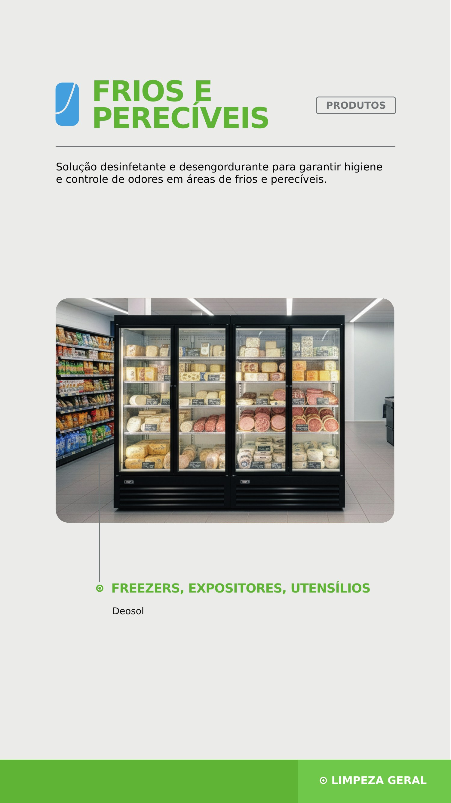
Frios e perecíveis
O material destaca limpeza, desinfecção e controle de odores em freezers, expositores e utensílios.
Baseado no PDF técnico fornecido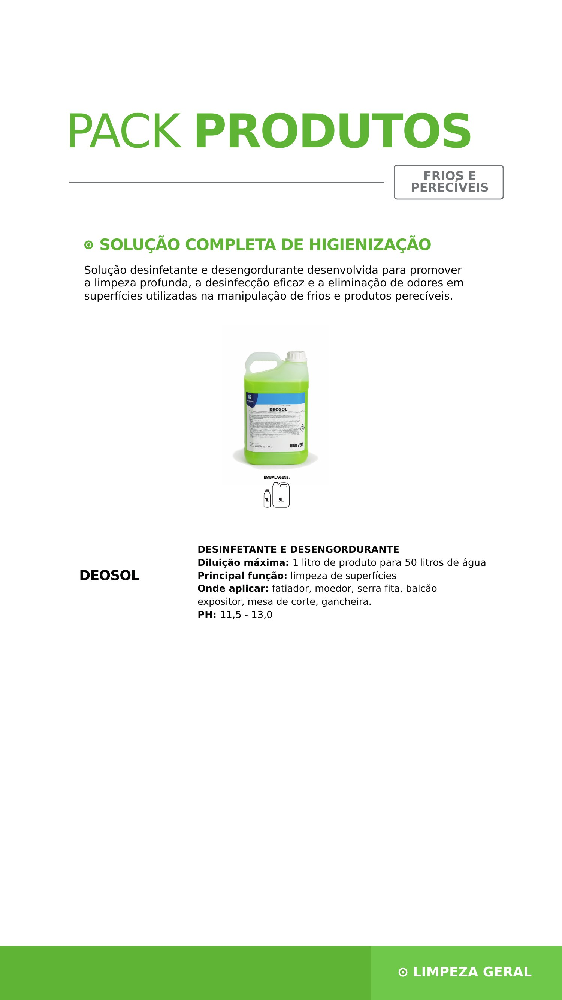
Pack frios e perecíveis
Deosol é a solução apresentada para superfícies de manipulação e equipamentos do setor de frios e perecíveis.
Baseado no PDF técnico fornecido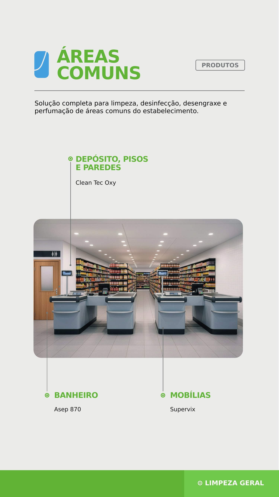
Áreas comuns
Depósitos, pisos, paredes, mobiliários e banheiros exigem limpeza, desinfecção, desengraxe e controle de odores.
Baseado no PDF técnico fornecido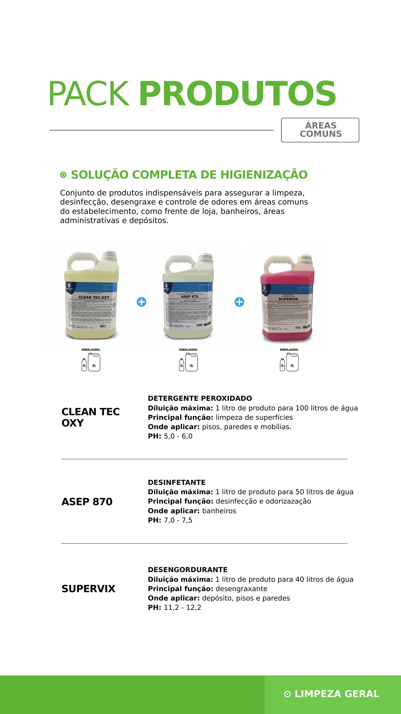
Pack áreas comuns
Clean Tec Oxy, Supervix e Asep 870 são organizados como solução para pisos, paredes, mobílias, depósitos e banheiros.
Baseado no PDF técnico fornecidoPrecisa definir produtos e equipamentos para sua operação?
Fale com o comercial e informe o tipo de ambiente, processo e necessidade principal.